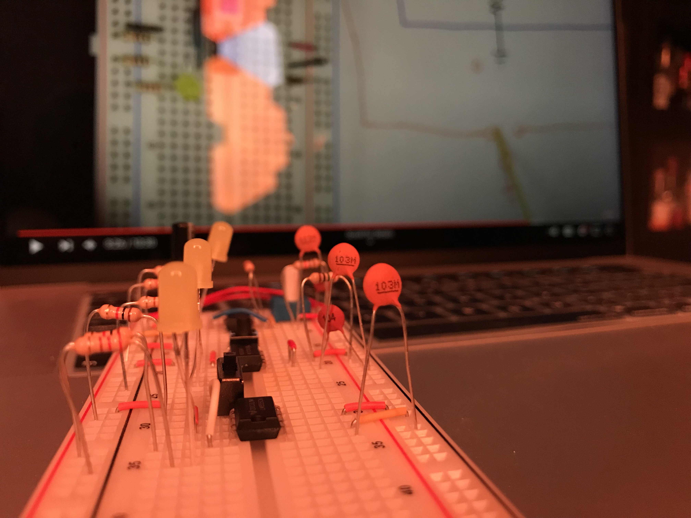

Putting together Ben Eater's clock module was a lot of fun.This kit was a gift from some great friends who were interested in furthering their knowledge about computers, and were considering building an 8-bit computer from scratch.
Why you should buy this kit
- If you learn best by watching videos
- All the ingredients are included
- Great conceptual overview of a computer's clock
- Backup components are included - handy if you burn something out from misconfiguration
- You want to support a great learning resource
Why you should not buy this kit
- If you prefer to work off of a schematic than following along a video - at times I found myself pausing and squinting, wanting to get things right before turning the power on
- If you have some trouble reading schematic diagrams using industry-standard symbolic representations or are more used to style of Fritzing circuit diagrams, etc
- You want to buy the full computer project kit!
I learn best by reading, but the video tutorials provide one of the best explanations I've heard. You don't just learn how to put the clock together, you learn why you need the clock to behave this way. His videos are still accessible even to those who have just begun to dip their toes into the subject.
The final product and demo.